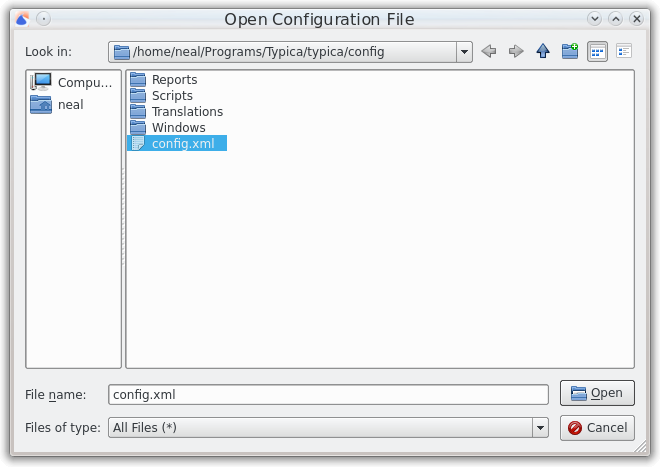

Open Configuration File
Most of Typica's appearance and functionality is controlled by a set of configuration files. This documentation covers an example configuration included with Typica. When prompted to open a configuration file, select the config.xml file included with Typica. When switching to a new version of Typica, it is important to use the configuration file included with the new version and not the old one. Opening that file will open the main navigation window.
